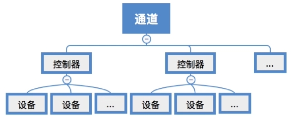
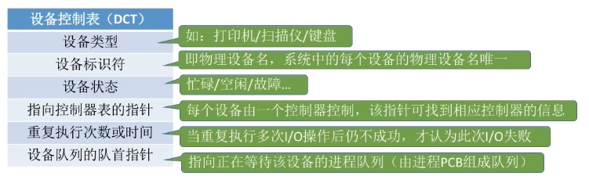
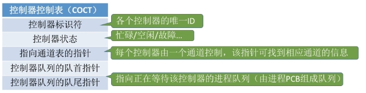
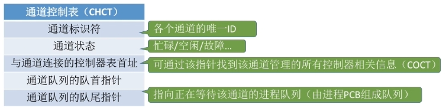
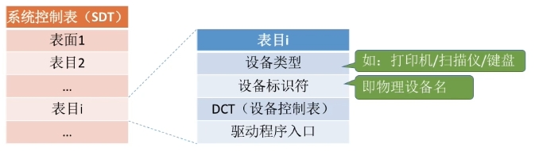

1. 应考虑的因素
1.1固有属性
- 独占设备：一个时段只能分配给一个进程
- 共享设备：可同时分配给多个进程使用
- 虚拟设备（SPOOLing）
1.2分配算法
先来先服务、优先级高者优先、短任务优先等
1.3安全性
安全分配方式
- 为进程分配一个设备后就将进程阻塞，本次IO完成后才将进程唤醒
- 一个时段内每个进程只能使用一个设备
- 优点：破坏了“请求和保持”条件，不会死锁
- 缺点：对于一个进程来说，CPU和IO设备只能串行工作
不安全分配方式
- 进程发出IO请求后，系统为其分配IO设备，进程可继续执行，之后还可以发出新的请求。只有某个IO请求得不到满足时才能将进程阻塞
- 一个进程可以同时使用多个设备
- 优点：进程的计算任务和IO任务可以并行处理，使进程迅速推进
- 缺点：有可能发生死锁
2. 静态分配与动态分配
2.2 静态分配
进程运行前为其分配全部所需资源，运行结束后归还系统。破坏了“请求和保持”条件，不会发生死锁
2.3动态分配
进程运行过程中动态申请设备资源
3.“设备、控制器、通道”之间的关系

一个通道可控制多个设备控制器，每个设备控制器可控制多个设备
4. 设备分配管理中的数据结构
4.1设备控制表（DCT）
- 系统为每个设备配置一张DCT，用于记录设备情况
- 关键字段：类型/标识符/状态/指向COCT的指针/等待队列指针

注：“进程管理”中提到“系统会根据阻塞原因不同，将进程PCB挂到不同的阻塞队列中”
4.2控制器控制表（COCT）
- 每个设备控制器都会对应一张COCT。操作系统根据COCT的信息对控制器进程操作和管理；反映IO控制器的使用状态以及和通道的连接情况。
- 关键字段：状态/指向CHCT的指针/等待队列指针

4.3通道控制表（CHCT）
- 每个通道都会对应一张CHCT。操作系统根据CHCT的信息对通道进程操作和管理
- 关键字段：状态/等待队列指针

（4）系统设备表（SDT）
- 记录了系统中全部设备的情况，每个设备对应一个表目；用于反映系统中设备资源的状态，即系统中有多少设备，有多少是空闲的。而又有多少已分配给了那些进程。
- 关键字段：设备类型/标识符/DCT/驱动程序入口

5. 设备分配的步骤
- 根据进程请求的物理设备名查找SDT
- 根据SDT找到DCT并分配设备，若设备忙碌则将进程PCB挂到设备等待队列中，不忙碌则将设备分配给进程
- 根据DCT找到COCT并分配控制器，若控制器忙碌则将进程PCB挂到控制器等待队列中，不忙碌则将控制器分配给进程
- 根据COCT找到CHCT并分配通道，若通道忙碌则将进程PCB挂到通道等待队列中，不忙碌则将通道分配给进程
注意：只有设备、控制器、通道三者都分配成功时，这次设备分配才算成功，之后便可以启动IO设备进行数据传输
缺点
- 用户编程时必须使用”物理设备名“，若换了一个物理设备，则程序无法运行
- 若进程请求的物理设备正在忙碌，则即使系统中还有同类型的设备，进程也必须阻塞等待
6. 设备分配步骤的改进
- 用户编程时使用逻辑设备名申请设备，操作系统负责实现从逻辑设备名到物理设备名的映射（通过LUT）
- 某用户进程第一次使用设备时使用逻辑设备名向操作系统发出请求，操作系统根据用户进程指定设备类型（逻辑设备名）查找系统设备表，找到一个空闲设备分配给进程，并在LUT中增加相应表项
- 逻辑设备表的设置问题
- 整个系统只有一张LUT：各用户所用的逻辑设备名不允许重复
- 整个用户一张LUT：各个用户的逻辑设备名可重复